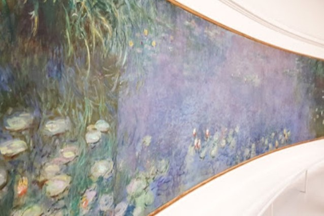
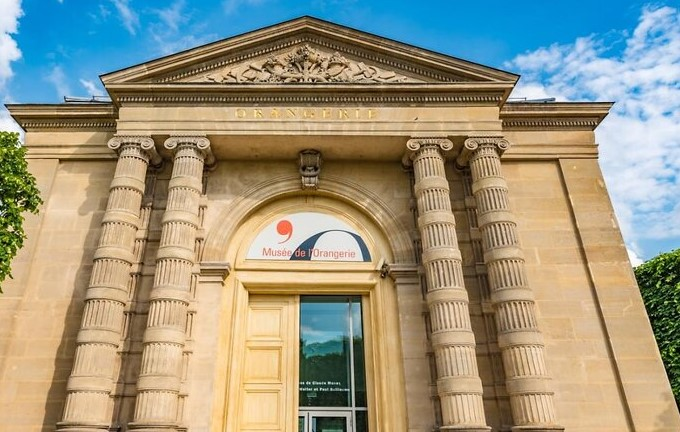
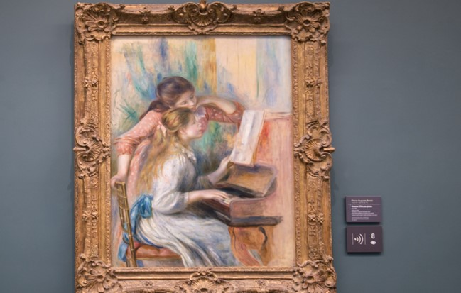
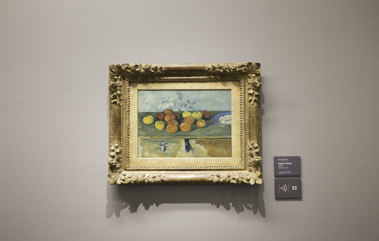

오랑주리 미술관
Orangerie Museum
- 
- 
- 
- 
주소
정보
전시 작품
교통
운영 시간
입장료
Jardin Tuileries, 75001 Paris, 프랑스
1852년 건축가 피르망 부르조아(Firmin Bourgeois)에 의해
건축된 오랑주리(Orangerie) 미술관의 건물은 원래 루브르
궁의 튈르리 정원에 있는 오렌지 나무를 위한 겨울 온실이었다.
1921년 주 드 폼(Jeu de Paume)처럼 오랑주리는 당대 예술
품을 위한 모던 갤러리로 지정 되면서 미술관의 용도가 변경 되었다.
1층은 모네의 작품을 위한 전시 공간으로 사용 되고 있으
며, 그 외의 전시관에서는 피카소, 마티스, 드랭, 르느와르,
세잔, 루소, 모딜리아니의 작품을 감상 할 수 있다.
19세기~20세기에 걸친 인상주의 작품들
(클로드 모네, 폴 세잔, 앙리 마티스, 파블로 피카소, 르누아르, 모딜리아니)
지하철
-메트로 1호선 Concorde 역
수요일부터 월요일까지 09:00 - 19:00
매달 첫 일요일 09:00 - 18:00 (무료)
일반 요금 : 9 €
할인 요금 : 6.5 €
18세 미만 : 무료